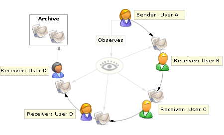

CuteFlow is a webbased document circulation tool. Users are able to define "documents" which are send step by step to every station/user in a list.
It's an electronical way for doing (i.e. internal) document circulations.
A document can be assembled from input fields that could be filled by the receiver of the document. So after a completed circulation you will have
a completely filled document. Also Attachments to the document are possible (i.e. for illustration material).

See the Concepts for a detailed view how CuteFlow works.